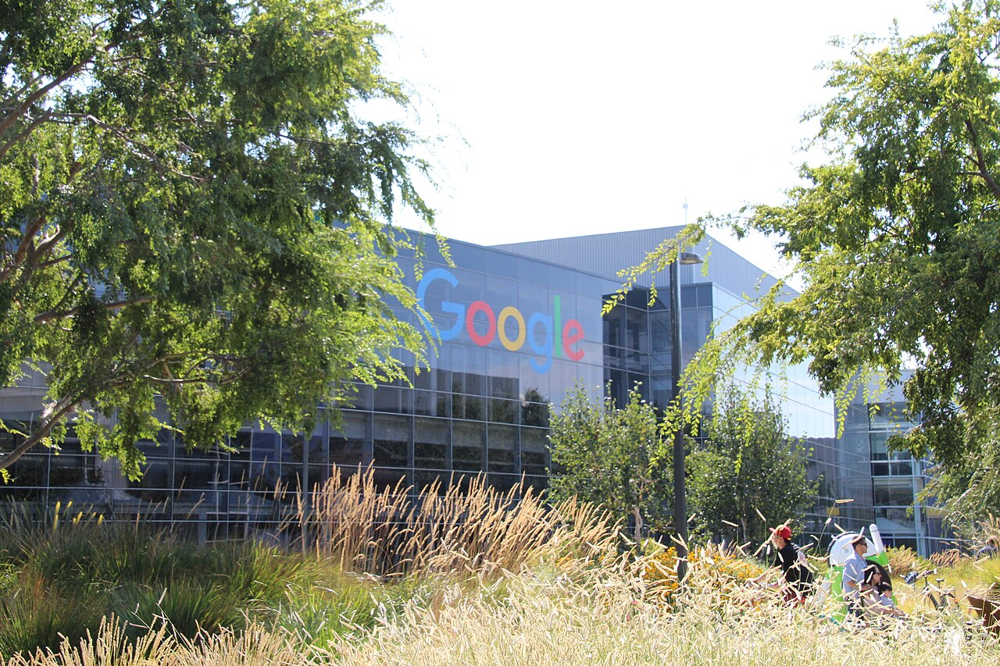

The Age of Language Models
History of AI from 2017 to Today
The last part of the story is about machines that can read and write language. In only a few years they went from research papers to the phones in our pockets.
2017: The Transformer
In 2017 eight Google researchers published a paper called "Attention Is All You Need", which introduced the Transformer. Almost every modern language model is based on it.
Earlier models read a sentence one word at a time, from left to right, and with long texts they tended to lose track of the beginning. The Transformer processes all the words together and, for each word, calculates how much attention to give to every other word. In the sentence "The dog didn't eat because it was tired", this is how the model links "it" to "the dog". Since the words are processed in parallel, training on GPUs is also much faster. This made it possible to build much bigger models and train them on much more text than before, and this is what the next steps are based on. The T in GPT stands for Transformer.

2018: Large Language Models
After the Transformer, companies began to train very large models on huge amounts of text. These Large Language Models (LLMs) are trained to predict the next word in a sentence, and with enough data this simple task produces surprisingly fluent text. The model is not given any grammar rules or facts: everything it knows comes from patterns in the text it has read. This is also why it can write sentences that sound correct but are completely wrong. In 2018 OpenAI released GPT-1, with about 117 million parameters, and Google released BERT. Parameters are the numbers that change during training, the same idea as the weights of the 1957 Perceptron.

2019 and 2020: GPT-2 and GPT-3
In February 2019 OpenAI announced GPT-2 but did not release the full model, saying it could be used to produce fake news. The complete version was published in November of the same year. GPT-3 followed in 2020 with 175 billion parameters, more than a hundred times as many as GPT-2. It could write essays, stories and code, and it could perform new tasks after seeing only a few examples in the prompt. Researchers noticed that bigger models did not just get a little better, but started to do things they had not been trained for, like translating or answering questions.
2022: ChatGPT
OpenAI launched ChatGPT on 30 November 2022. Besides the usual training on text, it was trained with human feedback: people wrote example answers and ranked the model's replies, and the model learned from these rankings. Its answers were clearer and more useful than those of earlier models. Earlier models like GPT-3 simply continued a text, while ChatGPT learned to follow instructions and to answer in the form of a dialogue.
ChatGPT was free and easy to use, and according to an analysis by the bank UBS it reached about 100 million users in two months, at the time the fastest growth ever recorded for a consumer app. Some schools banned it at first, while others started to use it in class.
After ChatGPT: Claude, Gemini and Llama
Other companies released their own models in 2023. Anthropic launched Claude, Google launched Bard, renamed Gemini in 2024, and Meta released Llama, whose weights researchers could download and run on their own hardware. Many current models can also work with images and voice. Some problems are still open. These models can "hallucinate", which means inventing facts that sound true, and they can repeat the biases found in the texts they were trained on.